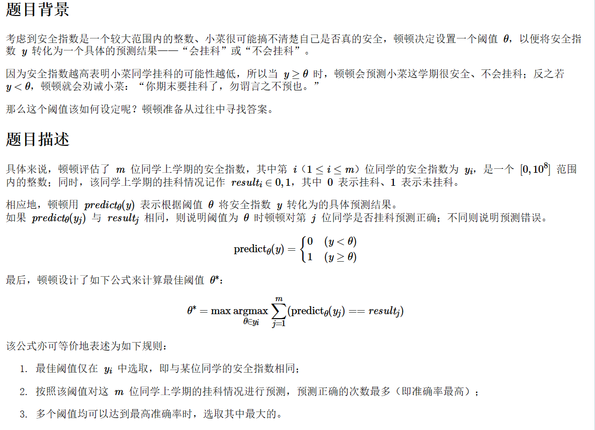

题目来源：csp 202012-2

样例1输入
6
0 0
1 0
1 1
3 1
5 1
7 1
样例1输出
3
对于输入的数据，并没有说第一个数是按照升序排列的，因此我们需要先进行一个排序，按照输出的一行数中第一个数的大小（y的值）进行排序。
70分做法
两个for循环，分别假设每个y为阈值的情况下，获得的准确度是多少，代码比较好写，就不进行演示了。
100分做法
首先进行思考，什么样的阈值才能满足准确度最大？换而言之，设置一个阈值y，是不是小于y的同学，如果他的result是0的话就不用变，也就是正确的预测值，如果大于1就会发生变化，则预测失败。而题目中我们只需要知道这个阈值y到底能预测对多少个同学，也就是多少个同学的result值不用发生变化。那么很简便的一个方法，就是统计小于y的同学中有多少result为1的，大于等于这个y的，有多少result为0的。
统计的方式有很多，例如可以设置一个全局的sum变量或者开辟数组，这里就用到了前缀和的一个思想。为了避免参数之间混乱，还是开数组比较清晰，用f1[i]记录y小于i的同学中result为1的个数，f0[i]为y小于i的同学中，result为0的个数，如果所有的同学中，result为0的同学共有sum0个，那么预测的准确次数可以由下式表示：
right_times = n - (f1[i] + sum0 - f0[i])
那么剩下的就是大模拟了罢。
我们以样例1为例，算法的过程如下：
sum0 = 2, n = 6
y result f0 f1 sum0 - f0 right_times
0 0 0 0 2 4
1 0 1 0 1 5
1 1 1 0 1 5
3 1 2 1 0 5
5 1 2 2 0 4
7 1 2 3 0 3
那么最终答案就是3。我们在遍历排好序的时候，只需维护上面的一些变量就行了，但这题其实还有一个麻烦的点，就是y值相同的数据可能有多个，不过这里我们可以用双指针来处理（感觉csp第二题挺喜欢这种数据的）。
AC代码如下：
#include <iostream>
#include <algorithm>
using namespace std;
struct Node{
int y;
int res;
};
Node in[100005];
int sum0 = 0; // 记录0的个数
int sum1 = 0;
int f0[100005], f1[100005];
bool cmp(const struct Node &a, const struct Node &b)
{
return a.y < b.y;
}
int main()
{
int n;
cin >> n;
for (int i = 1; i <= n; i++)
{
cin >> in[i].y >> in[i].res;
if (!in[i].res) sum0++;
}
sum1 = n - sum0;
sort(in + 1, in + n + 1, cmp);
int i = 1;
int ans = 0;
int max_right = 0;
int num1, num0;
num0 = num1 = 0;
while (i <= n && in[1].y != in[i].y)
{
if (in[i].res) num1++;
else num0++;
i++;
}
f0[i - 1] = f1[i - 1] = 0;
// 实际上对于多个相同的y值的同学，只需更新头和尾，用于和其他数据交互就行了
while (i <= n)
{
int p = i - 1; // 保存前一个y
f0[i] = f0[p] + num0, f1[i] = f1[p] + num1; // 先用前一个同学的num0和num1去更新f数组
num0 = num1 = 0; // 因为这里要重新初始化，所以上一步才需立即进行处理
while (i <= n && in[p + 1].y == in[i].y)
{
if (in[i].res) num1++; // 统计当前y值下的所有同学中result为1的个数
else num0++; // 统计当前y值下的所有同学中result为0的个数
i++;
}
f0[i - 1] = f0[p + 1], f1[i - 1] = f1[p + 1]; // y值的最后一个同学进行更新
int right = n - (f1[i - 1] + sum0 - f0[i - 1]);
if (right >= max_right)
{
max_right = right;
ans = in[i - 1].y;
}
}
cout << ans << endl;
}